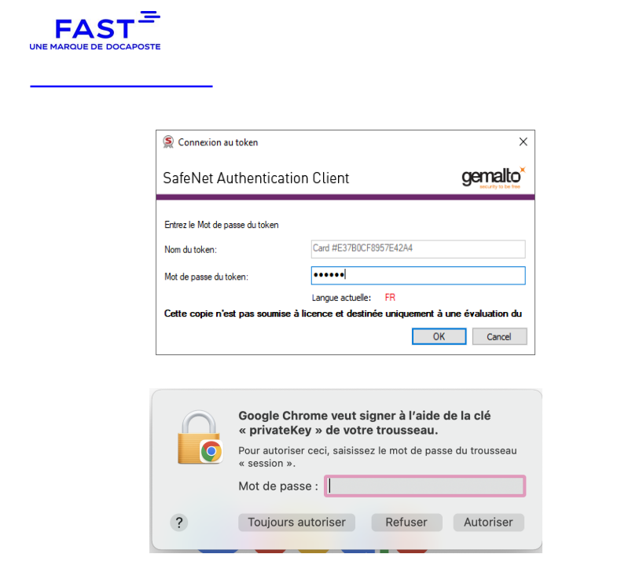
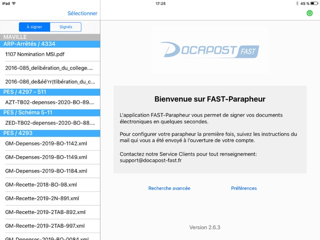
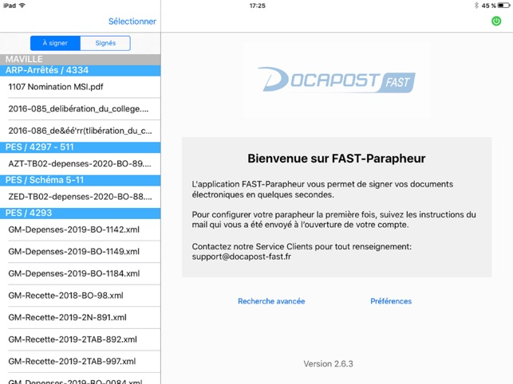
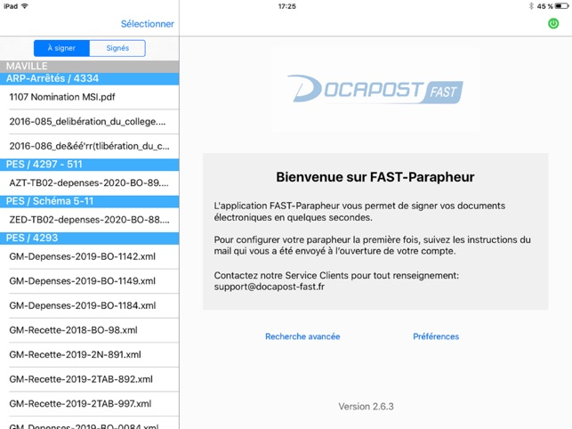

Cart@DS × FAST-Parapheur — Dématérialisation des signatures (Urbanisme)

 


Révolution Digitale Municipale
Intégration de FAST-Parapheur (SaaS de signature électronique) au cœur de Cart@DS (urbanisme) pour dématérialiser la signature des actes (arrêtés de permis, CU, DP, courriers), avec circuits standardisés, traçabilité et KPI de pilotage.
- Catégorie : Dématérialisation & Signature électronique
- Pour : Mairie de Montrouge – DINSI / Urbanisme
- Périmètre : Actes Urbanisme (PC, DP, CU) & courriers
Contexte & objectifs
- Cas d’usage : signature d’arrêtés de permis, CU, DP, courriers de notification.
- Acteurs : Instructeurs → Chefs de service → DGS → Maire/Adjoint (signataire).
- Douleurs initiales : délais hétérogènes (impression/retour), erreurs de version, traçabilité partielle.
Objectifs SMART :
- Délai médian de signature ≤ 48 h ouvrées (depuis l’envoi) — avant ≈ 5 j.
- Circuits conformes du 1er coup ≥ 95 % (zéro retour/rejet).
- Archivage probant : 100 % des actes avec PDF signé + preuve restitués dans Cart@DS.
Architecture & intégration (flux, formats, mapping)
Flux cible : Cart@DS (export) → FAST (circuit & signature) → FAST (preuve) → Cart@DS (réintégration & archivage).
- Formats : PDF/A + métadonnées (id_dossier, type_acte, service, signataire_final, hash).
- Statuts : envoyé → en cours de signature → signé / rejeté (retour vers Cart@DS).
- Sécurité : OTP / certificats signataires ; habilitations par rôle/Unité ; journaux d’audit.
{
"cartds_export": {
"pdf": "PC-2024-00123.pdf",
"metadonnees": {
"id_dossier": "PC-2024-00123",
"type_acte": "ArretePermisConstruire",
"service": "Urbanisme",
"signataire_final": "Maire",
"hash_sha256": "..."
}
},
"fast_circuit": ["Instructeur", "ChefService", "DGS", "Maire"],
"retour": {
"statut": "Signe",
"horodatage": "2024-06-12T10:42:00Z",
"preuve": "pc-2024-00123-preuve.xml",
"pdf_signe": "PC-2024-00123-signe.pdf"
}
}Principe : pas d’édition côté FAST ; les documents validés dans Cart@DS sont signés puis restitués avec leur preuve eIDAS.
Circuits de signature & habilitations (concret)
- Arrêté de permis : Instructeur (visa) → Chef de service (visa) → DGS (visa) → Maire (signature).
- Certificat d’Urbanisme (CU) : Instructeur (visa) → Chef de service (visa) → DGS (signature).
- Courrier de notification : Instructeur (visa) → Chef de service (signature, OTP).
- Règles d’escalade : délégation automatique si absence (paramétrée par unité).
- Notifications : emails FAST à chaque étape, rappel J+1 si blocage.
Conformité, traçabilité & archivage
- Preuve eIDAS (horodatage, certificat, chaîne de confiance) jointe à l’acte signé.
- Traçabilité : journal des visas/signatures (horodaté) consultable ; horodatage final.
- Archivage : dépôt du PDF signé + preuve dans le dossier Cart@DS ; statut mis à jour signé.
Tests intégrés & validation (jeux d’essai, critères)
- Jeux d’essai : 20 dossiers (PC/DP/CU), cas nominal + erreurs (mauvais signataire, fichier non conforme).
- Critères d’acceptation : délai médian <= 48 h ; 0 échec d’archivage ; 100 % preuves attachées ; circuits conformes ≥ 95 %.
- PV : anomalies tracées et corrigées puis re-testées (journal de non-régression).
Déploiement & conduite du changement (formation et Communication)
- Pilote Urbanisme (2 semaines) → extension Services Techniques.
- Formation : sessions ciblées par rôle (instructeurs, chefs de service, DGS, élus) + fiches réflexe “Signer avec FAST”.
- Communication : news Intranet, FAQ “circuits standard”, support N1 outillé (scripts pas-à-pas).
KPI & pilotage (définis et mesurables)
- Délai médian de signature = median(
t_signature − t_envoi) — cible ≤ 48 h ouvrées. - Circuits conformes 1er coup =
circuits_ok / circuits_totaux— cible ≥ 95 %. - Usage circuits standard =
circuits_std / circuits_totaux— cible ≥ 80 %. - Archivage probant =
actes_archives_preuve / actes_signes— cible 100 %.
Suivi mensuel, revue en comité ; quick-wins : fusion de circuits, gabarits d’emails, rappels automatiques.
Problèmes rencontrés & résolutions (retours d’expérience)
- Rejet de circuit (mauvais signataire) → sécuriser la sélection par rôle + unité, gabarits verrouillés.
- Document non conforme (pas PDF/A) → contrôle à l’export Cart@DS + message correctif.
- Blocage étape (absence signataire) → délégation automatique + rappel J+1.
- Preuve non restituée → reprise automatique ; alerte N2 si > 30 min.
Résultats & enseignements (avant / après)
Avant → Après (exemple de bilan sur 2 mois)
- Délai médian signature : ~5 j → 1,5 j (≤ 48 h ouvrées).
- Circuits conformes : 82 % → 97 % (moins de rejets/retours).
- Archivage probant : 100 % (PDF signé + preuve systématiques).
Enseignements clés
- Standardiser quelques circuits bien paramétrés apporte 80 % du gain.
- Traçabilité (preuve eIDAS, logs) = sécurité juridique + sérénité opérationnelle.
- Conduite du changement (formation courte + fiches réflexe) accélère l’adoption.